The presidential election of 4 October 2026 — do the numbers add up?
The tests do not establish evidence of manipulation
Five candidates together received 54.6% — interpreting that sum requires assumptions
54.6% of valid votes went to Flávio Bolsonaro, Cury, Ferreira, Caiado and Zema combined
No individual candidate exceeded 50%; the sum does not establish support for a single joint candidate
What happened on 4 October 2026
Brazil held the first round of its presidential election. Voting is compulsory and ballots are cast on electronic machines (urnas eletrônicas); the electoral authority TSE publishes final results per section — 499,248 of them, each covering a few hundred voters. Nobody crossed 50%, so the two leaders meet again in a runoff.
Result of the 1st round
Second round — 25 October 2026
Rest of the field
- Cury2.89%
- Ferreira2.24%
- Caiado2.18%
Turnout: 78.92%
- ballots cast125.3M
- registered voters158.7M
- blank + null votes4.8%
Vote aggregation and conditional scenarios
These comparisons describe aggregate results. Geographic similarity does not identify individual preferences, strategic voting or a voting paradox. Counterfactual results depend on assumptions about how voters would respond.
A sum of votes, not an observed coalition
The five candidates received 65.2M votes (54.6%) combined; the leading candidate received 47.0%. Combining their totals is an arithmetic scenario, not proof that a joint candidate would win.
Modelled transfers between the 2022 rounds
A model fitted to 472,075 matched sections estimates transfers between vote categories in 2022. These are ecological estimates from section totals, not tracked voters; good aggregate fit does not validate individual transfers.
Presidential and legislative totals differ
Caiado’s presidential total is 0.28 times the PSD deputy total; Zema’s is 0.11 times NOVO’s. These aggregate ratios do not identify who split their ticket or why.
Scenario 1 · Sum five candidates’ votes
Geographic clustering groups these five candidates together. Their combined 54.62% exceeds half of valid votes, but a joint candidacy could change turnout and preferences. The sum alone does not establish cloning or make the runoff unnecessary.
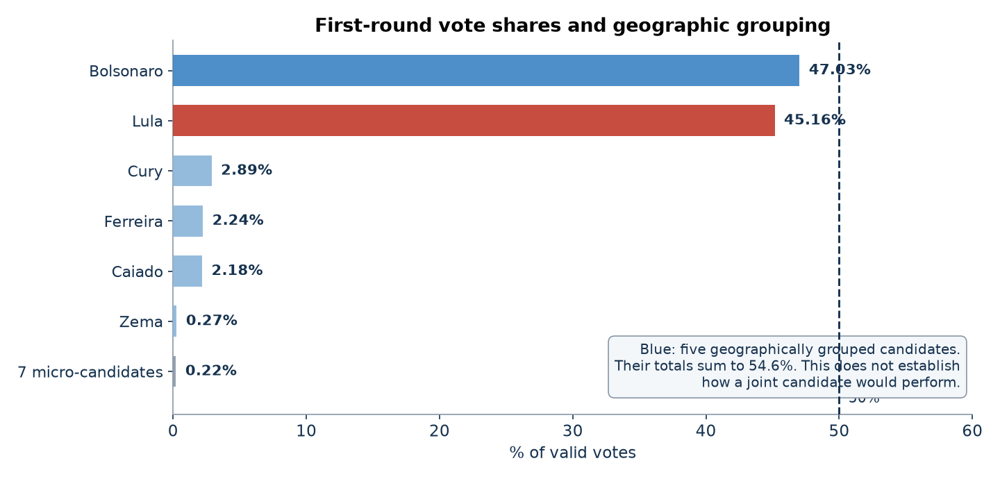
Model · Estimate transfers from the 2022 totals
The model fitted on 472,075 matched sections achieves R² = 0.976 on held-out sections. Its held-out aggregate Lula share exceeds the observed share by 0.7 percentage points. This evaluates aggregate prediction within 2022, not the accuracy of individual transfer rates or portability to 2026.
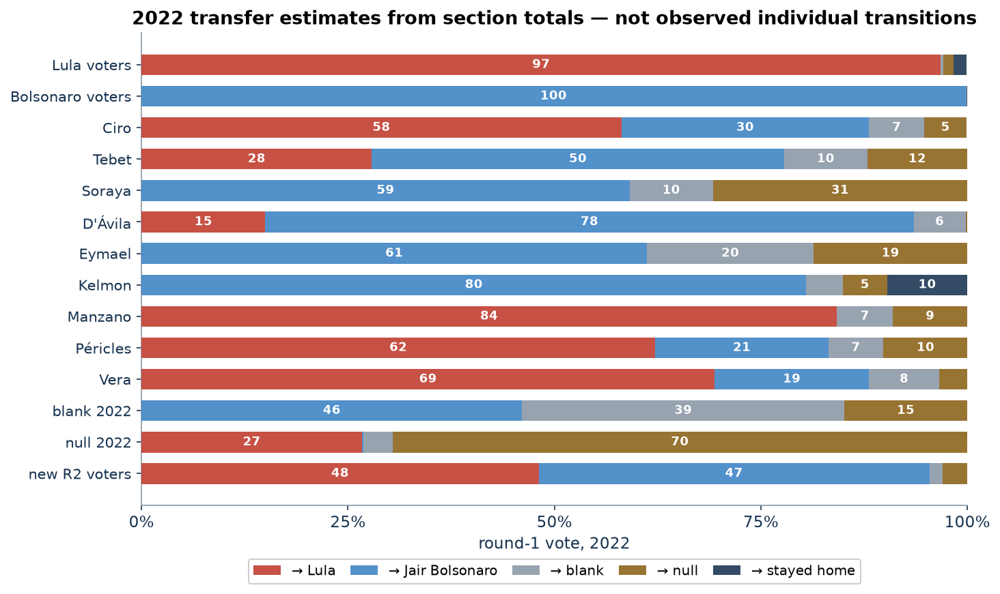
Scenario 2 · Apply the 2022 model to 2026
Mapping 2026 candidates to 2022 vote categories by geographic similarity and holding transfer rates fixed gives Flávio Bolsonaro 52.6% and Lula 47.4% of the two-candidate total. Mapping Flávio to Jair Bolsonaro is a modelling assumption involving different candidates, not observed continuity of voters. This is a conditional scenario, not a calibrated election forecast.
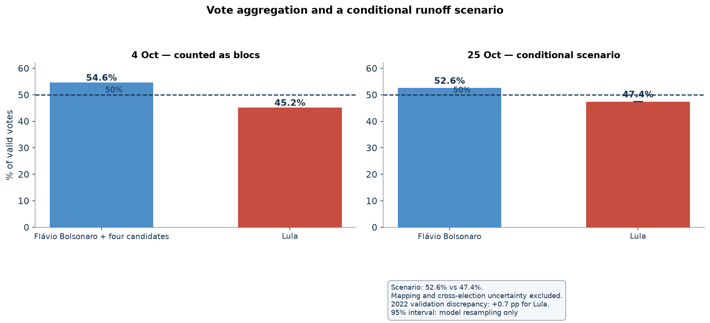
Comparison · Presidential and deputy vote totals
Compare presidential and party deputy totals on matched sections. These are aggregate counts for separate offices, not linked individual ballots.
| Party (candidate) | presidential | party deputy votes | pres ÷ dep | sections: deputy > president |
|---|---|---|---|---|
| PT (Lula) | 53.72M | 14.80M | 3.63 | 0.2% |
| PL (Bolsonaro) | 55.96M | 25.83M | 2.17 | 3.7% |
| AVANTE (Cury) | 3.44M | 1.84M | 1.87 | 13.6% |
| PTB (Ferreira) | 2.67M | 1.22M | 2.18 | 7.4% |
| PSD (Caiado) | 2.60M | 9.40M | 0.28 | 68.9% |
| NOVO (Zema) | 0.32M | 2.91M | 0.11 | 79.7% |
Manipulation detection test results
Eleven families of statistical diagnostics applied to section totals. Taken together, the reported results do not establish manipulation. Some tests reject their reference distributions; interpreting them requires attention to model assumptions. These diagnostics cannot certify an election as fraud-free.
•
Votes above a descriptive turnout threshold
The threshold of 91.6% is the sample’s 99.5th turnout percentile. Sections above it contain 0.62% of ballots cast, including 0.49% of Flávio Bolsonaro’s and 0.80% of Lula’s votes. This is a descriptive tail count: it neither identifies fraudulent votes nor bounds their total. A sample-defined percentile necessarily selects a small fraction of sections.
The threshold of 91.6% is the sample’s 99.5th turnout percentile. Sections above it contain 0.62% of ballots cast, including 0.49% of Flávio Bolsonaro’s and 0.80% of Lula’s votes. This is a descriptive tail count: it neither identifies fraudulent votes nor bounds their total. A sample-defined percentile necessarily selects a small fraction of sections.
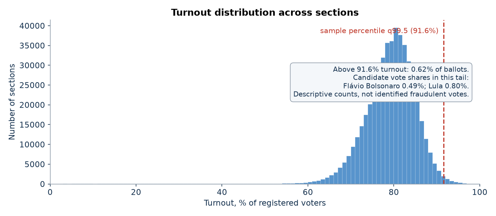

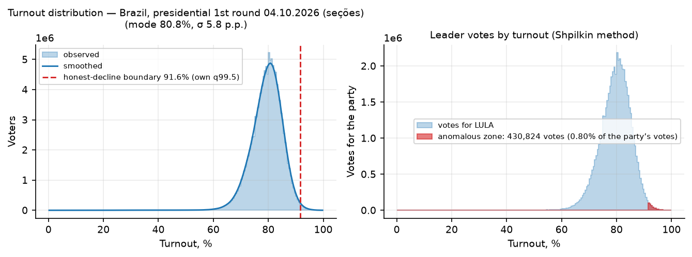
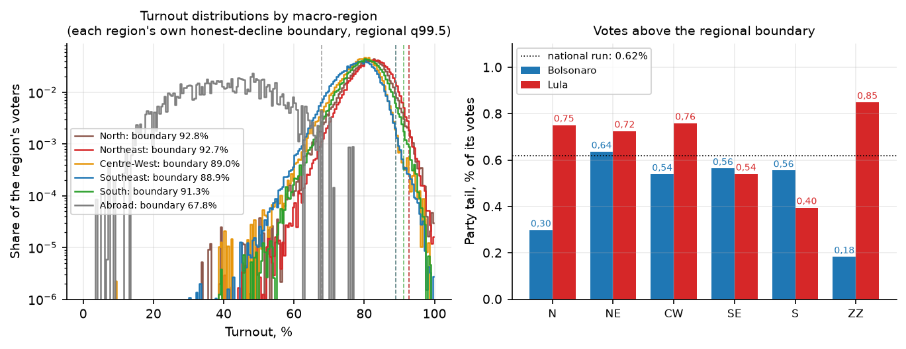
•
Turnout × result scatter (“comet tail”)
National weighted turnout–share correlations are −0.03 for Flávio Bolsonaro and +0.05 for Lula. Some ballot-addition mechanisms can produce a rising tail, but neither a nonzero correlation proves fraud nor a near-zero value rules it out. Geography and aggregation can affect these relationships.
National weighted turnout–share correlations are −0.03 for Flávio Bolsonaro and +0.05 for Lula. Some ballot-addition mechanisms can produce a rising tail, but neither a nonzero correlation proves fraud nor a near-zero value rules it out. Geography and aggregation can affect these relationships.
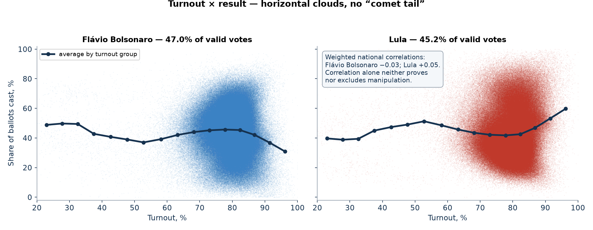
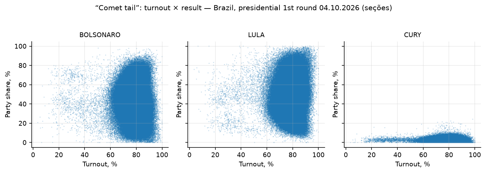
•
Election fingerprints (Klimek et al.)
A descriptive two-Gaussian mixture places both components near 78–80% turnout. No high-turnout/high-share corner cluster appears in the 12 candidate–region fits. This is a diagnostic inspired by election fingerprints, not identification of a fraud mechanism or a causal explanation of the clusters.
A descriptive two-Gaussian mixture places both components near 78–80% turnout. No high-turnout/high-share corner cluster appears in the 12 candidate–region fits. This is a diagnostic inspired by election fingerprints, not identification of a fraud mechanism or a causal explanation of the clusters.
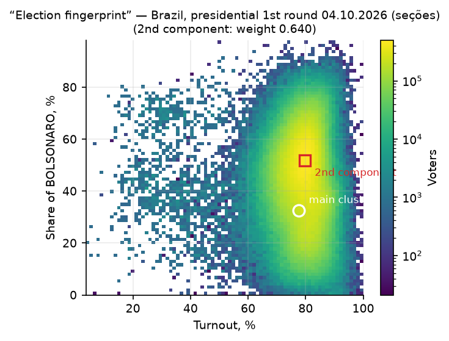
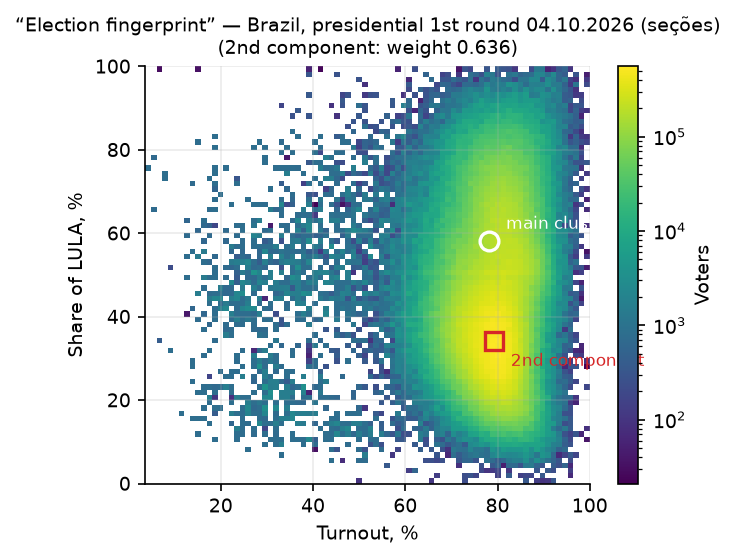

•
Round-number peaks (Kobak et al.)
The share of sections with whole-percent turnout matches the size-adjusted random null (z = +0.5); for the leader's share z = −0.03. For comparison, in documented falsification cases z reaches dozens.
What it checks: Counts how often turnout (or the leader's share) lands exactly on a whole percentage. Humans painting numbers gravitate to round values; for the honest baseline the null is simulated by a Monte Carlo that respects each section's size. Observed: 1.79% of sections with whole-percent turnout vs 1.79% expected (z = +0.5); the leader's share z = −0.03; at multiples of 5 — the stronger prior — |z| ≤ 1.3. Documented falsification cases reach z of dozens.
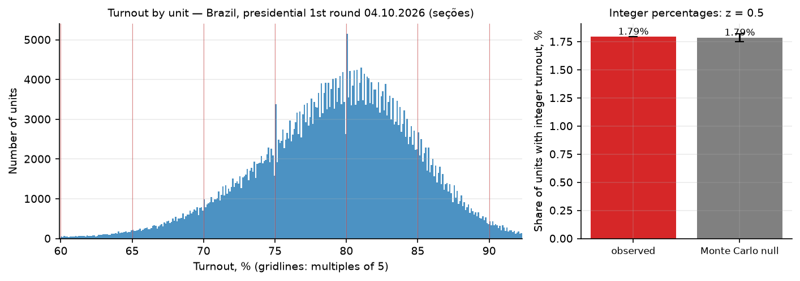
≠
Benford's second digit
The second-digit test rejects its reference distribution (p < 0.01). Small vote counts and heterogeneous sections can violate Benford assumptions. The smooth digit profile does not by itself prove either fraud or its absence; this rejection requires a better-calibrated null before a substantive conclusion.
The second-digit test rejects its reference distribution (p < 0.01). Small vote counts and heterogeneous sections can violate Benford assumptions. The smooth digit profile does not by itself prove either fraud or its absence; this rejection requires a better-calibrated null before a substantive conclusion.
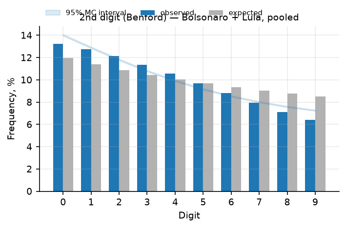
•
Last digit (Beber–Scacco)
Last-digit frequencies are close to uniform in the full set. Filtering to counts of at least 100 yields a maximum deviation of 0.65 pp; the excess of digits 0 and 5 is at most 0.12 pp. Size filters affect the reference distribution, so uniformity is not a universal test of authenticity.
Last-digit frequencies are close to uniform in the full set. Filtering to counts of at least 100 yields a maximum deviation of 0.65 pp; the excess of digits 0 and 5 is at most 0.12 pp. Size filters affect the reference distribution, so uniformity is not a universal test of authenticity.

•
2D correlations by state (Kobak et al.)
State-level turnout–share correlations range from −0.30 to +0.49 for Flávio Bolsonaro. Opposing patterns for the two leading candidates can arise mechanically because vote shares sum to one. These correlations alone do not distinguish mobilisation from manipulation.
State-level turnout–share correlations range from −0.30 to +0.49 for Flávio Bolsonaro. Opposing patterns for the two leading candidates can arise mechanically because vote shares sum to one. These correlations alone do not distinguish mobilisation from manipulation.
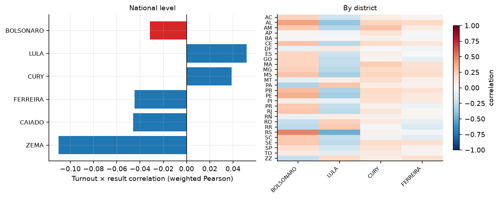
•
Outliers vs neighbours, machine learning, duplicates
The within-municipality outlier rule flags 4,665 sections (0.93%). Isolation Forest flags about 1% by its configured threshold. One exact duplicate result pair is reported. Flag counts and duplication require contextual investigation; neither a flag nor its absence determines whether a section was manipulated.
The within-municipality outlier rule flags 4,665 sections (0.93%). Isolation Forest flags about 1% by its configured threshold. One exact duplicate result pair is reported. Flag counts and duplication require contextual investigation; neither a flag nor its absence determines whether a section was manipulated.
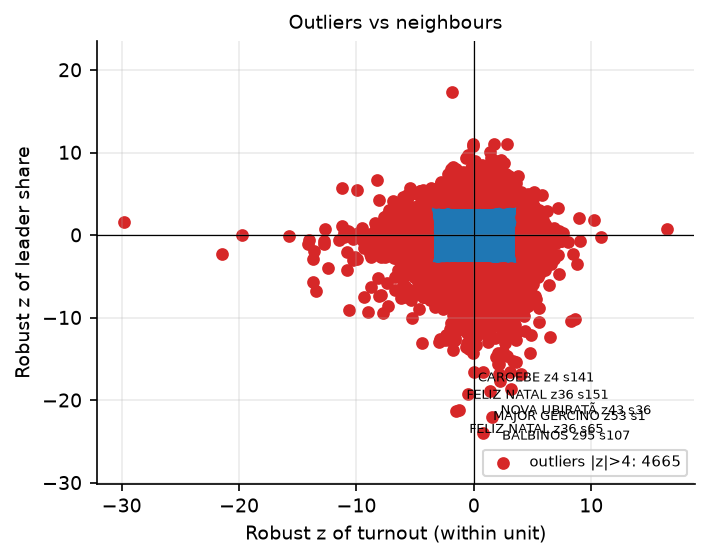
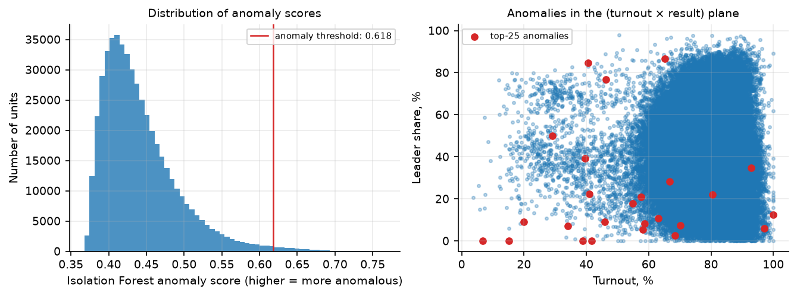
•
Voting-machine generations (urna models)
Observed vote shares differ across voting-machine generations. Deployment geography and electorate composition may confound this comparison. Unadjusted differences neither establish a machine effect nor certify machine security.
Observed vote shares differ across voting-machine generations. Deployment geography and electorate composition may confound this comparison. Unadjusted differences neither establish a machine effect nor certify machine security.
•
Control: the same sections in 2022
The comparison matches 461,218 sections across 2022 and 2026 (92.4% of 2026 sections, 93.3% of votes). The turnout thresholds are 91.5% and 91.6%; tail ballot shares are 0.52–0.59% in 2022 and 0.62% in 2026. Similarity is descriptive evidence, not proof of absence of manipulation in either election.
The comparison matches 461,218 sections across 2022 and 2026 (92.4% of 2026 sections, 93.3% of votes). The turnout thresholds are 91.5% and 91.6%; tail ballot shares are 0.52–0.59% in 2022 and 0.62% in 2026. Similarity is descriptive evidence, not proof of absence of manipulation in either election.
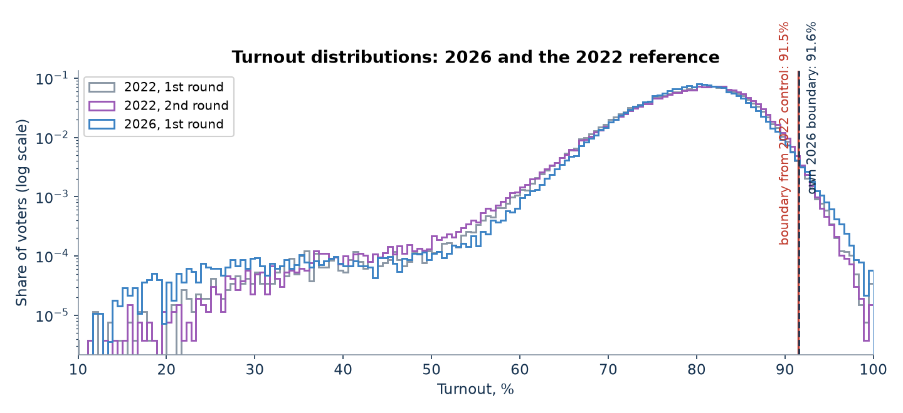
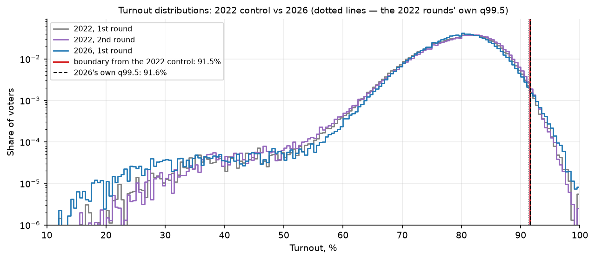


•
Sensitivity to two synthetic perturbations
Adding about 2 million synthetic ballots under the specified injection scheme increases the tail statistic 22-fold. Rounding turnout to integer percentages in 5% of sections increases z from 0.35 to 9.9. These experiments demonstrate sensitivity to those mechanisms and parameters, not to every manipulation of comparable size.
Adding about 2 million synthetic ballots under the specified injection scheme increases the tail statistic 22-fold. Rounding turnout to integer percentages in 5% of sections increases z from 0.35 to 9.9. These experiments demonstrate sensitivity to those mechanisms and parameters, not to every manipulation of comparable size.
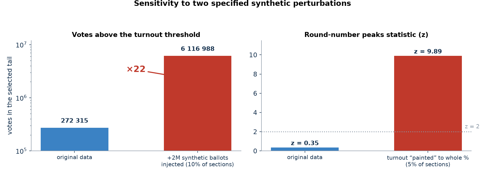

Scope and limitations
This is an analysis of published aggregate results, not a procedural audit of voting machines or ballot handling. The 2022 comparison is a reference, not a known fraud-free ground truth. Statistical non-detection does not prove absence of manipulation; test assumptions, spatial dependence and multiple comparisons matter. Aggregate fits do not identify individual behaviour.
Data & reproducibility
- Source: official section-level (seção) results from the TSE open-data portal (resultados-2026), final 1st-round files generated 5–6 October 2026: 499,248 sections including abroad voting — about 23 GB of CSV.
- Self-consistency: zero discrepancies in all checks (nominal votes vs detail files, blank/null cross-checks, no duplicated section keys, no turnout above electorate); the national total matches the official result to the exact vote. Control dataset: TSE resultados-2022, both rounds, matched to the same sections (92.4% coverage).
- Toolkit: open-source election-forensics pipeline (Python, pandas / scikit-learn) implementing Shpilkin, Klimek, Kobak, Beber–Scacco, neighbour-outlier and Isolation-Forest methods, urna-model stratification, the 2022 control and synthetic self-tests.
- Full technical report (in Russian), the section dataset, scripts and all 18 figures / 21 tables are available in the project repository.
- Geographic grouping, modelled 2022 transfers and conditional 2026 scenarios: see PARADOXES.md. Interpret its outputs with the limitations stated above.